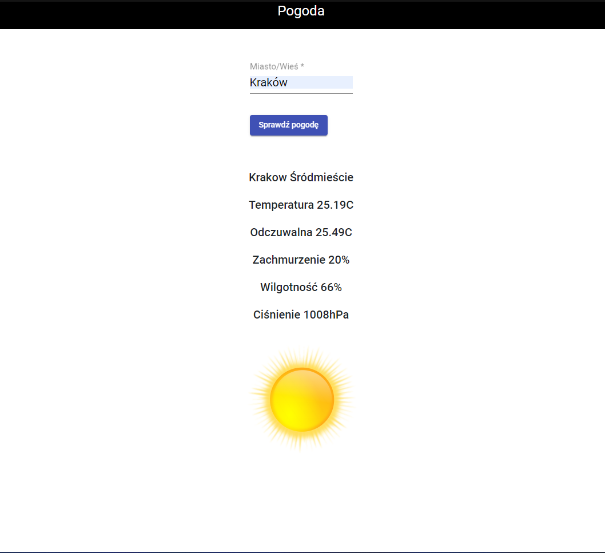

<div class="container-fluid">
  <p>
    Aplikacja w angularze do sprawdzania pogody.
  </p>
  
  <br><br>
  <a href="https://github.com/nestrockx/Weather_app" target="_blank" style="color: #DB7093;">Repozytorium z kodem strony</a>
</div>
